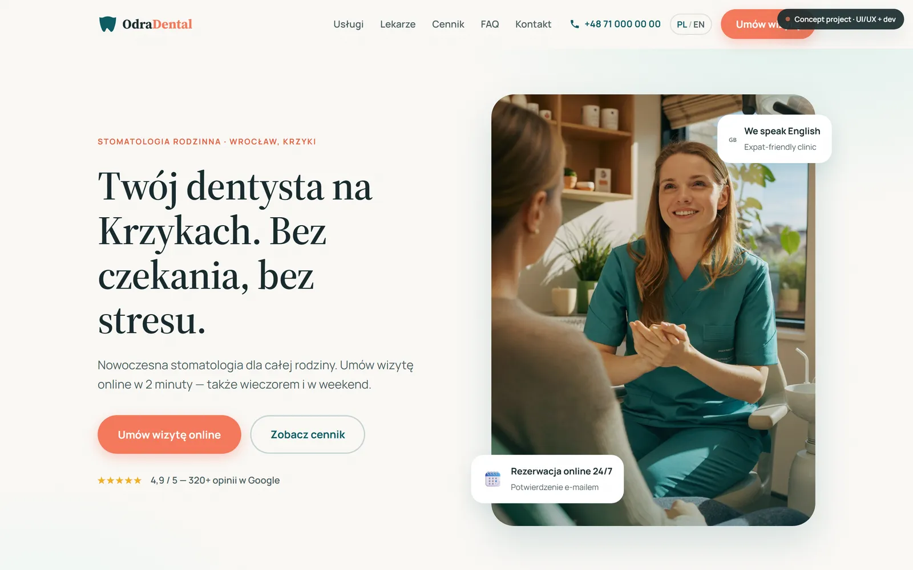
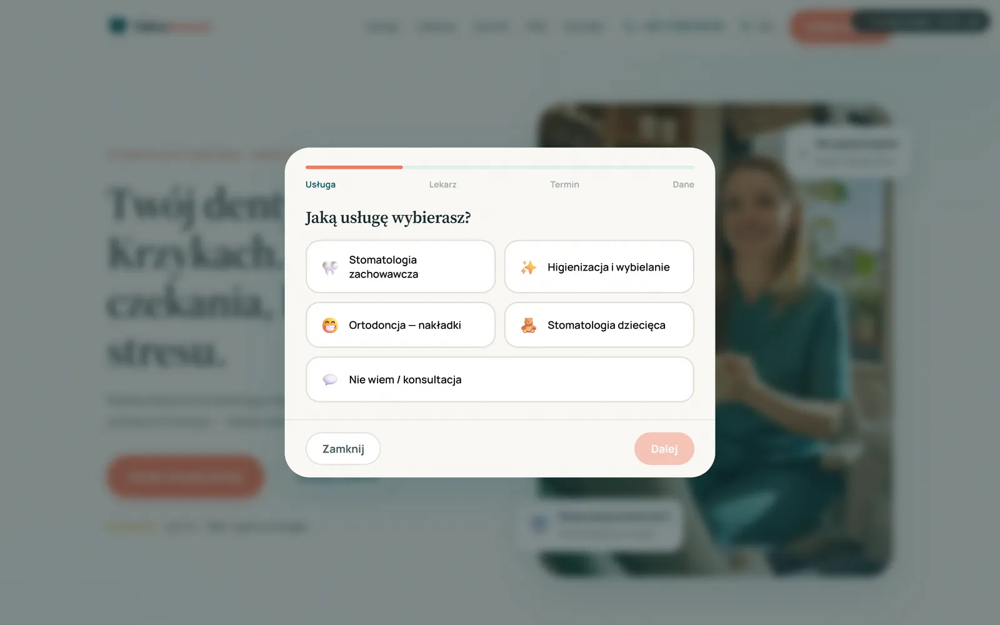
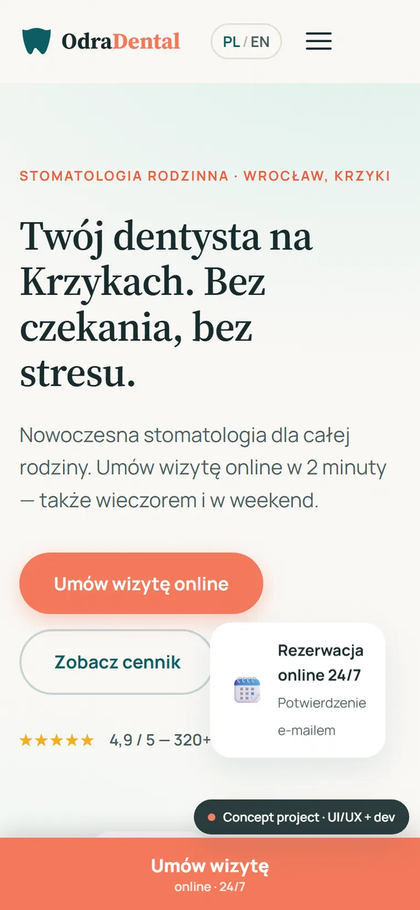

Odra Dental
Strona kliniki stomatologicznej we Wrocławiu z rezerwacją wizyty online — wybór usługi i lekarza, kalendarz z terminami, walidacja i eksport do kalendarza (.ics).
Lighthouse (desktop) na żywym wdrożeniu · LCP 1,2 s · TBT 0 ms
Kontekst i wyzwanie
Małe kliniki tracą pacjentów przez rejestrację wyłącznie telefoniczną — nikt nie odbiera wieczorem, a rozmowa to bariera. Strona ma budować zaufanie i umożliwić zapis 24/7.
Cel: dwujęzyczna (PL/EN) strona z prototypem rezerwacji online po stronie klienta — bez zewnętrznego systemu — która prowadzi pacjenta od usługi do potwierdzonego terminu.
Proces
Research i persony
Brief kliniki, persony pacjentów i bariery zapisu. Priorytet: zaufanie (lekarze, opinie) + prosty, szybki zapis.
UX — flow rezerwacji
Czterokrokowy przepływ: usługa → lekarz → termin (kalendarz) → dane. Walidacja na żywo, obsługa zajętego terminu, eksport .ics.
UI — ciepły i medyczny
Spokojna, ciepła paleta (petrol + koral + mięta), typografia serif + sans dla zaufania i czytelności. Realne zdjęcia zespołu i wnętrza.
Stack i budowa
Statyczna strona: HTML/CSS/JS bez zależności. Klient-side kalendarz z deterministycznymi terminami, walidacja, generowanie pliku .ics, i18n PL/EN.
Wdrożenie i optymalizacja
Deploy na GitHub Pages. Optymalizacja zdjęć: PNG 32 MB → WebP 236 KB (−99%), przez co Performance wzrosło z 78 do 94.
Paleta
Typografia
Rozwiązanie


